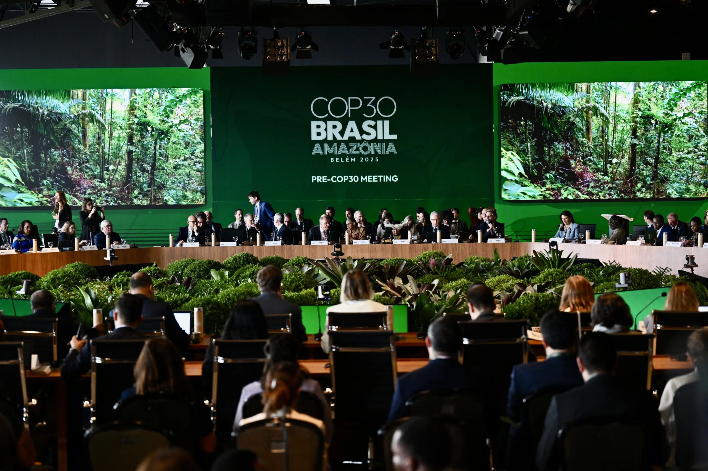

Presidência da COP Lança Plano de US$ 1,3 Trilhão com 'Taxa' sobre Ricos para Ação Climática
6 de novembro de 2025
Em uma proposta considerada ambiciosa e controversa, a presidência da Conferência das Nações Unidas sobre Mudanças Climáticas (COP) lançou um plano de mobilização de US$ 1,3 trilhão destinado a financiar a luta contra a crise climática.
O ponto central do plano é a sugestão de novas fontes de financiamento internacional, incluindo uma "taxa" global incidente sobre grandes fortunas, o setor de aviação internacional e a indústria de bens de luxo.
A iniciativa visa destravar o financiamento climático, principal ponto de impasse nas negociações entre países desenvolvidos e em desenvolvimento. A presidência da COP argumenta que os setores de maior riqueza e emissão de carbono devem contribuir de forma mais significativa para a transição energética e para fundos de adaptação.
A proposta foi recebida com otimismo por nações em desenvolvimento e organizações não governamentais, que veem na medida um caminho para a "justiça climática".
Contudo, a viabilidade política do plano enfrenta ceticismo. A implementação de impostos globais coordenados depende da adesão de todas as grandes economias, e a proposta deve enfrentar forte resistência de países com grandes centros financeiros e de setores da indústria que seriam diretamente afetados pela taxação.